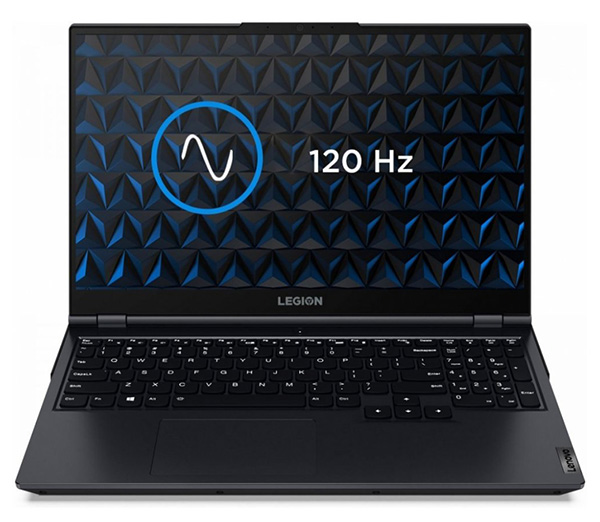
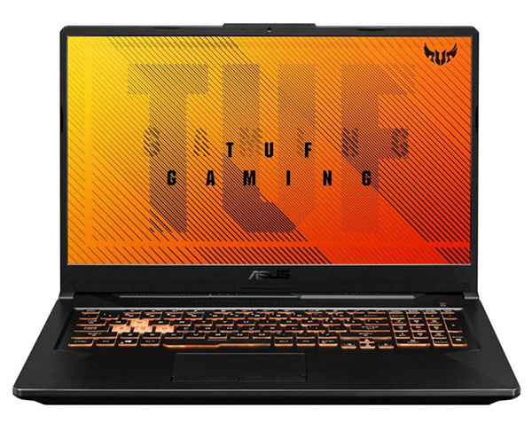

Kompaktný notebook obsahuje prvý čip vyrobený na mieru prístrojom spoločnosti Apple. Výkon, grafika,
rýchlosť a výdrž batérie majú v porovnaní s predchádzajúcim modelom ešte lepšie hodnoty a navyše Macbook Air
2020 pracuje bez jediného vetráčika. Retina displej s minimálnymi rámčekmi vás uchváti kvalitou obrazu,
širokým spektrom farieb a perfektnou čitateľnosťou textu. Na klávesnici sa pracuje pohodlne aj v tme a vďaka
špeciálnej úprave je ešte o niečo tichší. Nechýba obľúbený všestranný port Thunderbolt, WiFi 6 ani špičkové
zabezpečenie odtlačkom prsta.
Špecifikácie:
Hlavné charakteristiky:
Výrobca: Apple
Operačný systém: macOS
Produktový rad: Apple MacBook Air
Typ notebooku: Ultrabook
Veľkosť operačnej pamäte: 8 GB
Optická mechanika/Pevný disk: 256 GB SSD
Procesor: Apple M1
Displej/Grafika:
Uhlopriečka displeja: 13.3 palcov
Rozlíšenie displeja: 2560 x 1600
Lesklý displej: áno
Druh grafickej karty: Integrovaná karta
Cena: 1 129,00 €
Lenovo Legion 5 82JU0039CK

Popis:
Šikovný herný notebook Lenovo Legion umožňuje prácu aj zábavu. Herný notebook Lenovo Legion 5 si
prichystal konfiguráciu, ktorá je vhodná pre náročnejšie úkony študentov aj používateľov, ktoré sa nezaobídu
bez vyššieho výkonu Jeho konfigurácia obsahuje úspornejší, ale zároveň výkonný šesťjadrový procesor AMD
Ryzen 5. O ukladanie vašich dát sa postará dostatočne objemný moderný SSD disk. Gaming notebook má
klávesnicu, ktorá disponuje numerickou časťou a poteší vás tiež praktickým podsvietením. Predinštalovaným
operačným systémom, ktorý sa v počítači nachádza, je Windows 10 Home.
Špecifikácie:
Hlavné charakteristiky:
Výrobca: Lenovo
Operačný systém: Windows 10 Home
Produktový rad: Lenovo Legion
Typ notebooku: Herný notebook
Veľkosť operačnej pamäte: 16 GB
Optická mechanika/Pevný disk: 512 GB SSD
Procesor: AMD Ryzen 5
Displej/Grafika:
Uhlopriečka displeja: 15.6 palcov
Rozlíšenie displeja: 1920 x 1080
Dotykový displej: nie
Druh grafickej karty: NVIDIA GeForce RTX 3060 6 GB
Cena: 1 058,44 €
Asus FX506LH-HN004T

Popis:
Praktický herný notebook Asus TUF Gaming bude vhodným spoločníkom na prácu aj zábavu. Konštrukcia je
vyrobená z veľmi odolného plastu, čo zaručí nižšiu hmotnosť. Notebook na hry ASUS TUF Gaming F15
FX506LH-HN004T Bonfire Black si prichystal konfiguráciu, ktorá ho predurčuje pre úkony, ktoré vyžadujú vyšší
výkon Je v ňom ukrytý výkonný, ale zároveň úspornejší štvorjadrový procesor Intel Core i5. Vaše dáta sa budú
ukladať na dostatočne objemný SSD disk, ktorý dokáže znateľne zrýchliť chod celého systému. Klávesnici
nechýba ani numerická časť. Veľkou výhodou je predinštalovaný operačný systém Windows 10 Home.
Špecifikácie:
Hlavné charakteristiky:
Výrobca: Asus
Operačný systém: Windows 10 Home
Produktový rad: Asus TUF Gaming
Typ notebooku: Herný notebook
Veľkosť operačnej pamäte: 8 GB
Optická mechanika/Pevný disk: 512 GB SSD
Procesor: Intel Core i5
Displej/Grafika:
Uhlopriečka displeja: 15.6 palcov
Rozlíšenie displeja: 1920 x 1080
Dotykový displej: áno
Druh grafickej karty: NVIDIA Geforce GTX 1650 4 GB
Cena: 789,00 €
Asus G513IH-HN002T
Popis:
Spoľahlivý herný notebook Asus ROG zastane všetky potrebné úlohy a bude sa na vašom stole dobre vynímať.
Hráčsky notebook Asus ROG Strix G15 G513IH-HN002T Original Black sa môže pochváliť parametrami, ktoré sú
ideálne pre tých najviac náročných používateľov požadujúcich maximálny výkon, u niektorých činností navyše
pomôže aj dedikovaná grafika. Jeho srdcom je osemjadrový procesor AMD Ryzen 7, ide o výnimočne silný čip z
radu, ktorý patrí medzi najvyššie na trhu. O ukladanie vašich dát sa postará dostatočne objemný SSD disk,
ktorý zrýchli chod celého systému. Hneď po rozbalení počítača môžete začať pracovať, predinštalovaný je
systém Windows 10 Home.
Špecifikácie:
Hlavné charakteristiky:
Výrobca: Asus
Operačný systém: Windows 10 Home
Produktový rad: Asus ROG
Typ notebooku: Herný notebook
Veľkosť operačnej pamäte: 8 GB
Optická mechanika/Pevný disk: 512 GB SSD
Procesor: AMD Ryzen 7
Displej/Grafika:
Uhlopriečka displeja: 15.6 palcov
Rozlíšenie displeja: 1920 x 1080
Lesklý displej: áno
Druh grafickej karty: NVIDIA Geforce GTX 1650 4 GB
Cena: 888,00 €
Dell Inspiron 14 TN-5406-N2-511S
Popis:
Dell Inspiron 14-5406 v striebornej farbe je praktické zariadenie, ktoré disponuje 2 možnosťami využitia.
Vďaka konvertibilnému a precíznemu dizajnu ho môžete používať ako notebook, ale aj ako tablet s pevným
stojanovým základom. Dell Inspiron 14-5406 je vyrobený z kombinovaného šasi (hliník a plast), čo mu dodáva
lepšiu odolnosť pred poškodením. Veľkou výhodou je jeho 14" kompaktné a praktické spracovanie, vďaka čomu si
ho môžete vziať všade so sebou a spríjemniť si čas aj na cestách.